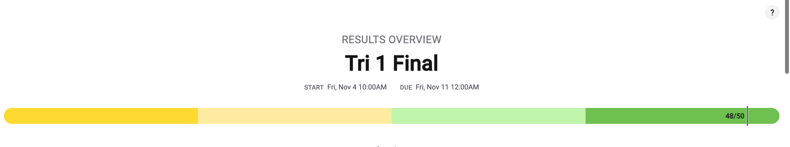
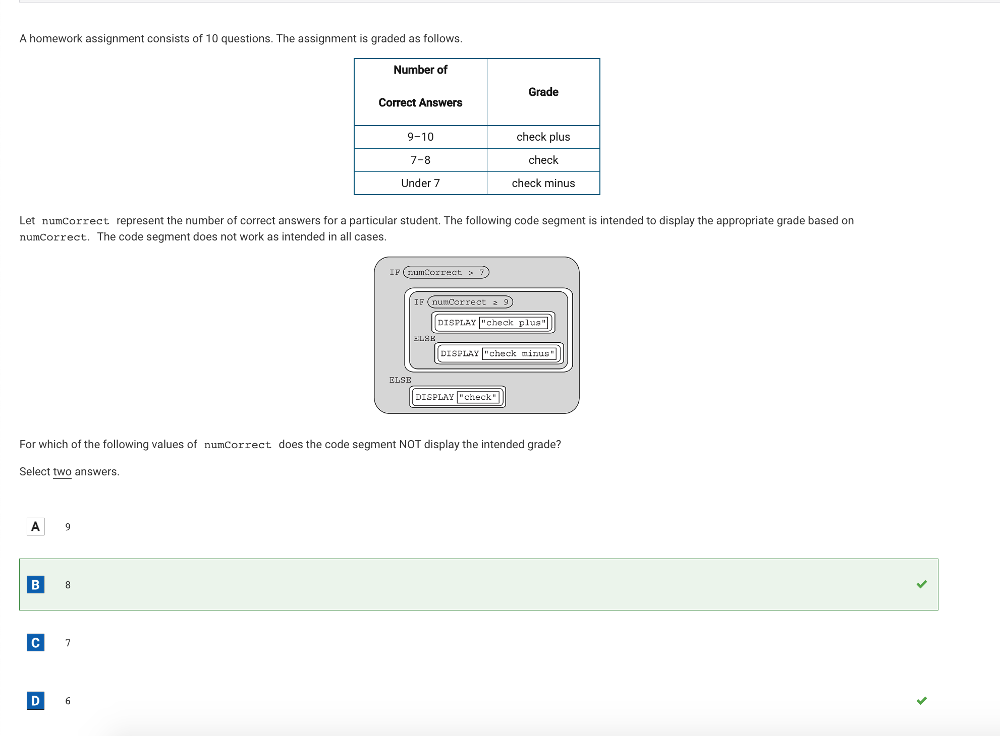
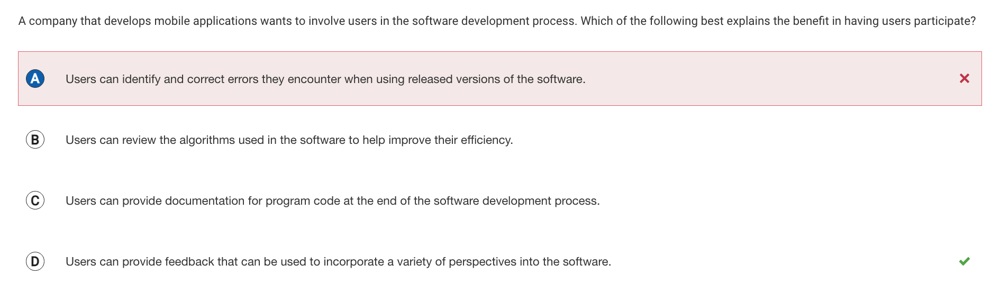

score:

The Two Questions that i got wrong:
 What i got wrong in this problem was that i accidentally mis-clicked the option two. i did not review the answers and when u submitted it, i was socked that it was wrong.  Option A and D sounded very similar to me. so much that i could not pick between the two. i decided to flip and coin and if it landed on head i would pick A and if it landed on tails, i would pick D. eventually it landed on heads and picked A and it was somehow wrong.